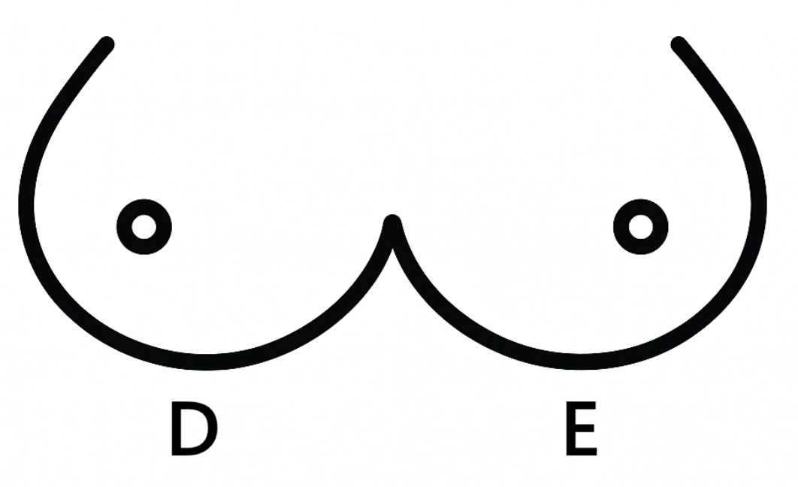

São Marcos Triagem
Início
Dúvidas ou sugestões
Formulário de Triagem
Protocolo para exame de Mamografia
Informações padrão
Nome do paciente:
Idade:
Data:
Tem câncer de mama na família?
Sim
Não
Mais detalhes (se necessário):
Já fez cirurgia na mama?
Sim
Não
Mais detalhes (se necessário):
Já fez biópsia?
Sim
Não
Mais detalhes (se necessário):
Por que está fazendo o exame?
Tem dor
Caroço ou nódulo
Tem secreção

Limpar marcações
Já fez mamografia?
Sim
Não
Se sim, quando?
Tem filhos?
Sim
Não
Amamentou?
Sim
Não
Mais detalhes (se necessário):
Última Menstruação:
Não lembra
Está no período pós-menopausa?
Não
Sim
Nunca Menstruou
Caso sim, existe algum motivo específico?
Com qual idade?
Não Lembra
Usa hormônio/remédio para tratar menopausa?
Sim
Não
Não lembra
Mais informações:
Você está grávida?
Sim
Não
Não sabe
Observações Gerais
Gerar PDF